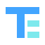

Programming & data
Python · SQL · Pandera · Datavalidering
Akademisk och projektbaserad erfarenhet
ERFAN TAHMASEMIMLOPS ENGINEER STUDENT · NACKADEMIN
Jag är Erfan Tahmasemi, MLOps Engineer Student med fokus på vägen från experiment till reproducerbara, driftsatta och observerbara maskininlärningslösningar.
01 / OM MIG
Jag studerar MLOps Engineering på Nackademin (2025-2028) och söker en LIA-plats där jag kan bidra i ett riktigt engineeringteam. Mitt intresse ligger i systemen runt modellerna: data som går att lita på, automatiserade flöden, containerisering, CI/CD och tydlig leverans.
Genom projekt har jag arbetat praktiskt med bland annat FastAPI, MLflow, datavalidering, Docker och GitHub Actions. Jag arbetar metodiskt, är nyfiken på hur system beter sig i drift och fortsätter bygga för att lära.
TEKNISKT FOKUS
02 / KOMPETENS
Teknikerna nedan beskriver studie- eller projekterfarenhet, inte påstådda expertkunskaper.
Python · SQL · Pandera · Datavalidering
Akademisk och projektbaserad erfarenhetscikit-learn · TensorFlow · PyTorch · MLflow
Akademisk erfarenhet och pågående projektFastAPI · ML-serving · Modellversionering · Drift detection
Projektbaserad erfarenhetDocker · GitHub Actions · CI/CD · Kubernetes · Linux · Azure · AWS
Praktisk, akademisk och bekant med03 / UTVALDA PROJEKT
GRUPPPROJEKT · CI/CD
En utbildningsmiljö för kundbortfallsprognoser där teamet byggde ett ML-flöde med fokus på kvalitet och leverans. Mina fem godkända och mergade pull requests omfattade statistisk datadrift, leveransverifiering, multi-stage Docker-byggen, layer caching, smoke tests, GHCR-publicering, modellmetadata/lineage och Ruff i CI.
Resultaten är teamets projektresultat. Mina individuella bidrag anges ovan.
Öppna repository ↗FASTAPI · DOCKER · MLFLOW
Ett repository för ML-serving med FastAPI, MLflow, datavalidering, automatiserade tester, Docker och GitHub Actions.
Repository ↗PYTHON · FASTAPI · STREAMLIT
En fullstack-applikation för taxi-prediktion, byggd med Python, FastAPI och Streamlit.
Repository ↗EDGE · MQTT · GRAFANA
Miljöövervakning med Raspberry Pi Pico W, Python, MQTT, datalagring och Grafana. Repository-länken behöver bekräftas eftersom den angivna publika länken inte kunde nås vid senaste kontroll.
Länk inväntar bekräftelse04 / UTBILDNING
Augusti 2025 - januari 2028
AVKLARADE KURSER
PLANERADE KURSER
Systemarkitektur och teknikstackar för MLOps · Säkerhet och integritet · Övervakning och felhantering av ML-modeller
05 / KONTAKT